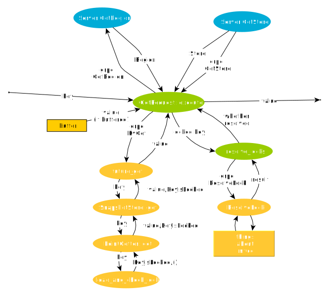

事务处理流程
本文将以带事务的请求处理为例，告诉读者一个请求是如何从上到下被 TiKV 处理的。
TiDB-TiKV 组成的系统中，处理请求的模型大致如下所示：

client 端虽然不是 TiKV 的一部分，但对理解一个请求是如何被 TiKV 处理的至关重要。
无论是 TiDB 还是各种语言的client，其发起事务请求的流程都是相似的，此处采用较为容易理解的 client-rust ，对其进行分析。
基本上 TiKV 的事务系统是基于 Google 的 Percolator ，建议你在试图理解 TiKV 的事务模型前先对其有一定了解。
开始事务
首先，需要创建一个 client，这个 client 包含了与 pd 组件通信的 PdRpcClient。
这部分代码在：client-rust 的 src/transaction/client.rs 中的 Client::new。
使用 Client::begin 开始一个事务。
这部分代码在 src/transaction/client.rs 中。
#![allow(unused_variables)] fn main() { pub async fn begin(&self) -> Result<Transaction> { let timestamp = self.current_timestamp().await?; Ok(self.new_transaction(timestamp)) } }
可以看出就是用现在的时间戳创建了一个新的 Transaction 对象。
一路从 self.current_timestamp 跟踪下去，你会发现实际上它是向 PD::tso rpc 的参数流中放入一个请求，并从输出流收到一个 逻辑时间戳。
进行这个 rpc 调用的代码在 src/pd/timestamp.rs 中。
调用的远程函数是 pd 的 server/grpc_service.go 中的 Server.Tso。
（单点）读
使用 Client::get 来进行读取一个 key 对应的 value。
这部分代码在 src/transaction/client.rs 中。
#![allow(unused_variables)] fn main() { pub async fn get(&self, key: impl Into<Key>) -> Result<Option<Value>> { let key = key.into(); self.buffer.get_or_else(key, |key| { new_mvcc_get_request(key, self.timestamp).execute(self.rpc.clone()) }).await } }
首先试图从本地缓存中读取（由本事务提交的）内容，否则就 rpc 调用 KvGet 来进行读取。
你可能已经知道了，TiKV 将数据分为多个 region，每个 region 的几个副本都放在不同的 TiKV 实例上，通过pd来确定每个 key 在哪里。
这里的代码似乎没有体现“确定数据在哪个 region /哪个 TiKV 实例”的步骤。
但是实际上这部分代码藏在execute下，你可以发现 retry_response_stream 在这里调用了获取 TiKV 地址的代码。
GetRegion 的实现在 pd 的这里。
然后回到 store_for_key ，这里会再调用一个 map_region_to_store ，最终通过 grpc 调用了 GetStore，将 region 对应的 Store （TiKV 实例，体现为一个 KVClient）找到。
GetStore 的实现在 pd 的这里。
终于我们拿到了 key 所在的 KVClient 了，我们可以用这个 client 向 TiKV 副本请求 key 对应的 value 了。
我们回到 retry_response_stream，下一个我们要关心的函数调用是 store.dispatch ，这个函数为啥要这样实现我有点看不透，总之它达到的效果就是 grpc 调用 KvGet。
然后，我们终于到达了 TiKV 仓库， TiKV 中，请求由 Server 结构 进行处理，我们要看的 KvGet 请求会被打到这里。
我们可以看到我们首先通过Storage::get函数来试图读取 key 在 start_ts 下的值。
get 函数有一点大，我们将其中的测量部分忽略，可以得到：
#![allow(unused_variables)] fn main() { pub fn get(&self, mut ctx: Context, key: Key, start_ts: TimeStamp) -> impl Future<Item = Option<Value>, Error = Error> { const CMD: CommandKind = CommandKind::get; let priority = ctx.get_priority(); let priority_tag = get_priority_tag(priority); let res = self.read_pool.spawn_handle( async move { // The bypass_locks set will be checked at most once. `TsSet::vec` is more efficient // here. let bypass_locks = TsSet::vec_from_u64s(ctx.take_resolved_locks()); let snapshot = Self::with_tls_engine(|engine| Self::snapshot(engine, &ctx)).await?; let snap_store = SnapshotStore::new(snapshot, start_ts, ctx.get_isolation_level(), !ctx.get_not_fill_cache(), bypass_locks, false); let result = snap_store.get(&key, &mut statistics) // map storage::txn::Error -> storage::Error .map_err(Error::from); result }, priority, thread_rng().next_u64(), ); res.map_err(|_| Error::from(ErrorInner::SchedTooBusy)) .flatten() } }
bypass_locks 这一块我还是看不透，那么我们先从snapshot 开始。这个函数会获取 Engine，然后在这个 Engine 上得到一个快照，并用这个快照和相关配置设置构造了一个 SnapshotStore ，然后在这个 SnapshotStore 上调用了 get，拿到了最终的数据。
仔细观察 SnapshotStore::get 的代码，你会发现它实际上是构造了一个 PointGetter ，然后我们再看 PointGetter 的 get 方法：
#![allow(unused_variables)] fn main() { pub fn get(&mut self, user_key: &Key) -> Result<Option<Value>> { if !self.multi { // Protect from calling `get()` multiple times when `multi == false`. if self.drained { return Ok(None); } else { self.drained = true; } } match self.isolation_level { IsolationLevel::Si => { // Check for locks that signal concurrent writes in Si. self.load_and_check_lock(user_key)?; } IsolationLevel::Rc => {} } self.load_data(user_key) } }
我们可以看到，当要求 Si 的隔离级别的时候，我们需要检查是否有锁，如果检测到了，就会返回 KeyIsLocked 错误：
#![allow(unused_variables)] fn main() { fn load_and_check_lock(&mut self, user_key: &Key) -> Result<()> { self.statistics.lock.get += 1; let lock_value = self.snapshot.get_cf(CF_LOCK, user_key)?; if let Some(ref lock_value) = lock_value { self.statistics.lock.processed += 1; let lock = Lock::parse(lock_value)?; if self.met_newer_ts_data == NewerTsCheckState::NotMetYet { self.met_newer_ts_data = NewerTsCheckState::Met; } lock.check_ts_conflict(user_key, self.ts, &self.bypass_locks) .map_err(Into::into) } else { Ok(()) } } }
然后我们调用 PointGetter 的 load_data 函数来获取版本对应的值。load_data 我暂时还没有看透。
接着，我们就将 GetResponse 返回到 client。
此时得到的 value 已经上面说的这个 GetResponse 里面了，在但 client 仍然会在 retry_response_stream 中处理这一回复来解决锁。
Resolve locks
首先用 take_locks 拿到遇到的锁，然后调用 resolve_locks 尝试解决这些锁：
#![allow(unused_variables)] fn main() { pub async fn resolve_locks( locks: Vec<kvrpcpb::LockInfo>, pd_client: Arc<impl PdClient>, ) -> Result<bool> { let ts = pd_client.clone().get_timestamp().await?; let mut has_live_locks = false; let expired_locks = locks.into_iter().filter(|lock| { let expired = ts.physical - Timestamp::from_version(lock.lock_version).physical >= lock.lock_ttl as i64; if !expired { has_live_locks = true; } expired }); // records the commit version of each primary lock (representing the status of the transaction) let mut commit_versions: HashMap<u64, u64> = HashMap::new(); let mut clean_regions: HashMap<u64, HashSet<RegionVerId>> = HashMap::new(); for lock in expired_locks { let primary_key: Key = lock.primary_lock.into(); let region_ver_id = pd_client.region_for_key(&primary_key).await?.ver_id(); // skip if the region is cleaned if clean_regions .get(&lock.lock_version) .map(|regions| regions.contains(®ion_ver_id)) .unwrap_or(false) { continue; } let commit_version = match commit_versions.get(&lock.lock_version) { Some(&commit_version) => commit_version, None => { let commit_version = requests::new_cleanup_request(primary_key, lock.lock_version) .execute(pd_client.clone()) .await?; commit_versions.insert(lock.lock_version, commit_version); commit_version } }; let cleaned_region = resolve_lock_with_retry( lock.key.into(), lock.lock_version, commit_version, pd_client.clone(), ) .await?; clean_regions .entry(lock.lock_version) .or_insert_with(HashSet::new) .insert(cleaned_region); } Ok(!has_live_locks) } }
可见是先筛选出已经超过其持有期限的锁，然后逐个解决。
然后就会获取 lock_version 对应的 commit_version （可能被缓存过），并用来发起 cleanup_request。
Cleanup 这东西据说4.0之后已经不用了，那我就不管了吧。
然后就是重点：resolve_lock_with_retry，这个函数实际构造一个 ResolveLockRequest， 并发送给 TiKV 执行。
我们转到 TiKV 的代码，你会发现这个请求先是被转换为 TypedCommand， 然后被 sched_txn_command 执行。
根据 Request 上的 key 是否为空，会将 ResolveLockRequest 转换为 ResolveLock 或 ResolveLockLite。它们之间区别是 ResolveLockLite 只会尝试解决 Request 要求解决的那些锁，而 ResolveLock 似乎解决了整个 region 上的锁。
ResolveLock 这个command实际执行的位置比较难找，我找了好久终于发现它有两段，一段在这里，负责读，还有一段在这里，负责写，不过注释已经解释了 ResolveLock 会做些什么。
这两段依赖了 MvccTxn 和 MvccReader，本次限于篇幅不在展开，将在另外的文章中讲解。
然后就可以返回到 client-rust 的 resolve_locks 函数，并继续下去，直到所有的 expired_locks 都被解决完了。
然后就可以返回最终的 Get 结果了。（终于啊……）
我们用一张数据流图总结这个过程：
